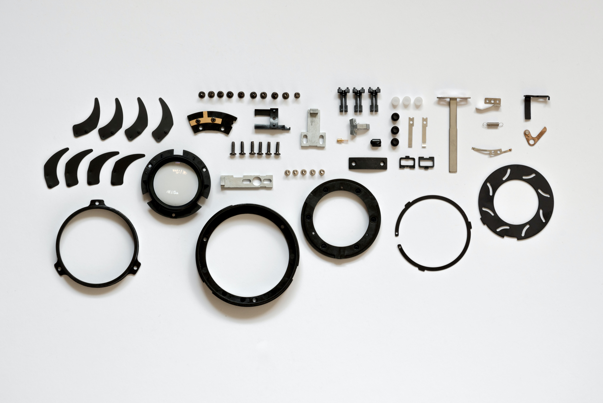

Parts and Repair
At Lapzy's Cars, we offer a wide range of parts and repair services for all makes and models of cars. Our experienced technicians are trained to diagnose and fix any issues with your vehicle, from basic maintenance to complex repairs.
Parts Sales
We carry a large inventory of OEM and aftermarket parts, including:
-

Brakes and rotors
We offer a wide selection of brake pads, rotors, calipers, and other brake components to keep your car's braking system in top condition.
-

Engine parts
From spark plugs to pistons, we have everything you need to keep your car's engine running smoothly.
-

Filters
We carry a variety of air, oil, and fuel filters to keep your car's engine and cabin air clean and free from contaminants.
-
Suspension and steering components
We offer a range of suspension and steering components, including shocks, struts, springs, tie rods, and more.
-

Transmission parts
From clutches to gears, we have the parts you need to keep your car's transmission running smoothly.
Our knowledgeable staff can help you find the right parts for your vehicle and provide expert advice on installation.
Repair Services
We offer a full range of repair services, including:
- Oil changes and tune-ups
- Brake service
- Suspension and steering repairs
- Engine repairs and rebuilding
- Transmission repairs and rebuilding
- And much more!
Our technicians use state-of-the-art equipment and techniques to diagnose and repair your vehicle quickly and effectively. We also